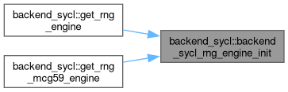

backend_sycl Class Reference
#include <queue_sycl.hpp>
Public Member Functions | |
| backend_sycl (const backend_sycl &)=delete | |
| backend_sycl & | operator= (const backend_sycl &)=delete |
Static Public Member Functions | |
| static void | backend_sycl_queue_init (QueueOptions selector=QueueOptions::CPU_SELECTOR) |
| static bool | backend_sycl_is_cpu () |
| static void | backend_sycl_rng_engine_init (size_t seed=1) |
| static cl::sycl::queue & | get_queue () |
| static mkl_rng::mt19937 & | get_rng_engine () |
Detailed Description
This is container for the SYCL queue, random number generation engine and related functions like queue and engine initialization and maintenance. The queue could not be initialized as a global object. Global object initialization order is undefined. This class postpone initialization of the SYCL queue and mt19937 random number generation engine.
Definition at line 62 of file queue_sycl.hpp.
Constructor & Destructor Documentation
◆ backend_sycl()
|
delete |
Explicitly disallow copying
Member Function Documentation
◆ backend_sycl_is_cpu()
|
static |
Return True if current queue is related to cpu or host device
◆ backend_sycl_queue_init()
|
static |
Initialize queue
Here is the caller graph for this function:

◆ backend_sycl_rng_engine_init()
|
static |
Initialize rng_engine
Here is the caller graph for this function:

◆ get_queue()
|
inlinestatic |
Return the queue to the user
Definition at line 122 of file queue_sycl.hpp.
Here is the call graph for this function:

◆ get_rng_engine()
|
inlinestatic |
Return the rng_engine to the user
Definition at line 141 of file queue_sycl.hpp.
Here is the call graph for this function:

The documentation for this class was generated from the following file:
- /github/workspace/dpnp/backend/src/queue_sycl.hpp